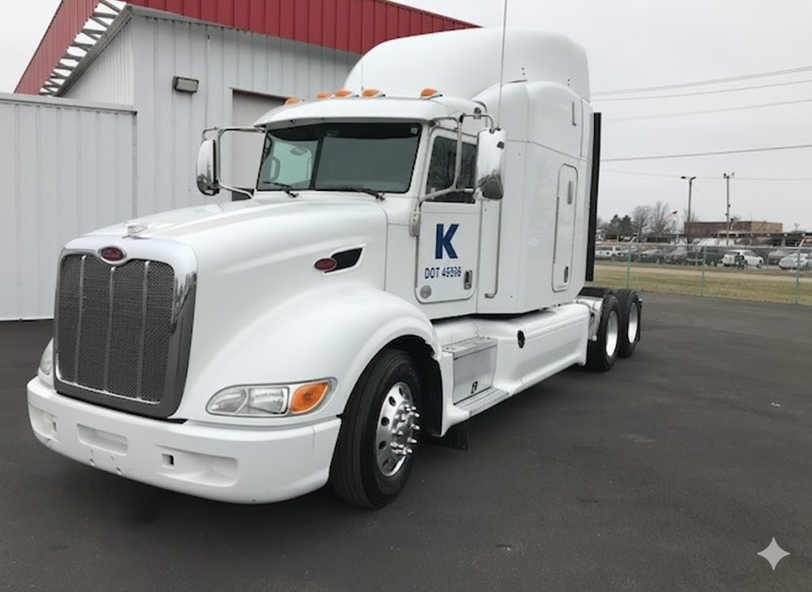
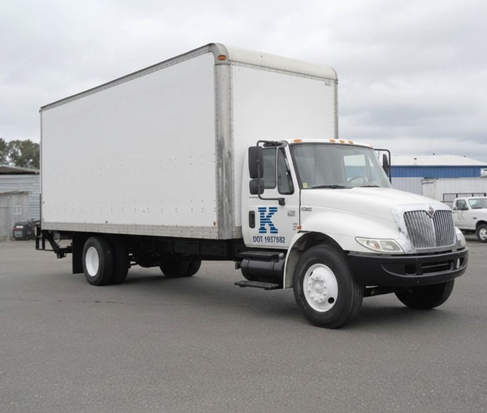

Our Services
We offer a wide range of professional services:
CDL A
Our CDL-A service utilizes tractor-trailer rigs for long-haul interstate freight, covering multi-state routes efficiently and safely. Designed for high-capacity shipments, CDL-A trucks are ideal for companies that need large-volume or time-sensitive deliveries across state lines.
CDL B Interstate
Our CDL B Interstate trucking service provides reliable, long-distance freight movement using Class B straight trucks and box trucks across state lines. We focus on predictable routes, professional operators, and DOT-compliant operations, suited for businesses that need secure and timely deliveries between states.
CDL B Intrastate
Our intrastate trucking service is designed for businesses that need reliable, same-state freight movement without the complication of interstate logistics. We deliver time-sensitive, palletized, or general freight using Class B straight trucks / box trucks, perfectly suited for city, suburban, and regional routes within a single state.